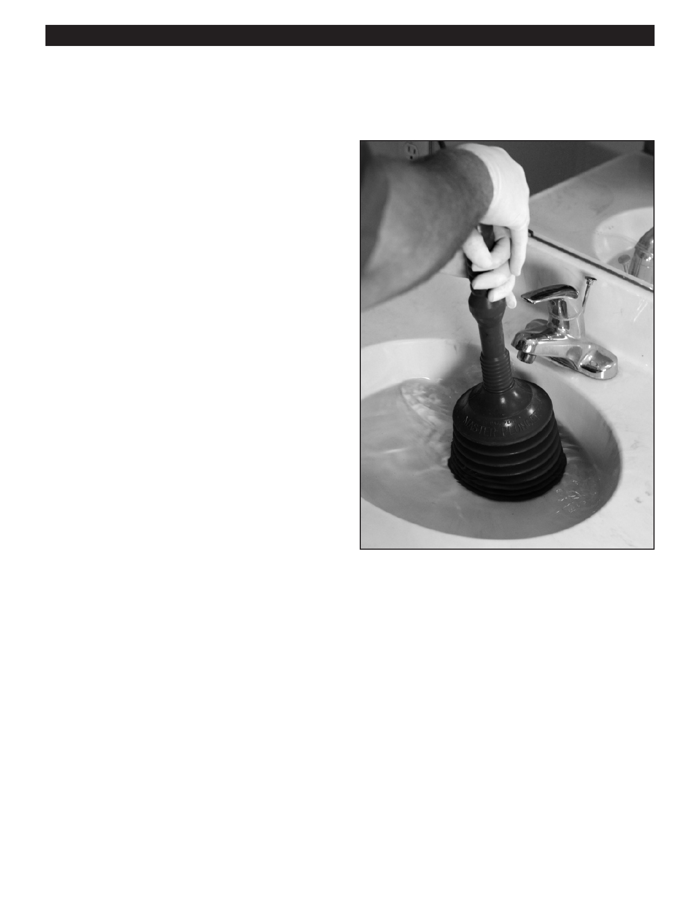

PA RT I C I PA N T R E S O U R C E G U I D E
Working with Drain Unclogging Tools
Here’s some familiar how-to information on using plungers and plumber’s snakes.
How to Clear a Clogged Drain with
a Plunger
1. Remove the drain strainer or stopper.
2. Sink and tub only: Plug the overflow opening with a
wet rag.
3. Partially fill the drain area with water…if there is no
standing water.
4. Hold the plunger handle firmly and push straight down
several times. Repeat if necessary.
5. Run hot water down the drain.
How to Clear a Clogged Drain with
a Snake
1. Remove the drain strainer.
2. Insert the end of the snake and push into drain opening.
3. Turn hand crank and push farther into drain opening,
navigating past the trap.
4. Remove snake and run hot water down the drain.
Note: On a tub drain, remove the overflow plate and run the
snake through the overflow opening.
How to Clear a Clogged Toilet with a Snake
1. Push the end of the snake into the drain opening.
2. Turn hand crank and push farther into drain opening, navigating past the trap.
3. Remove snake and flush toilet.
Notes:
72